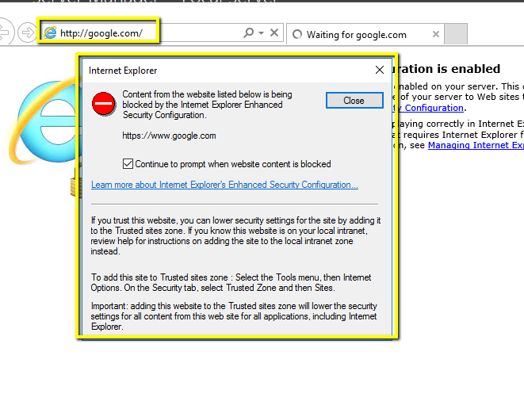
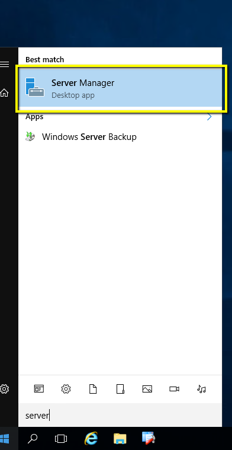
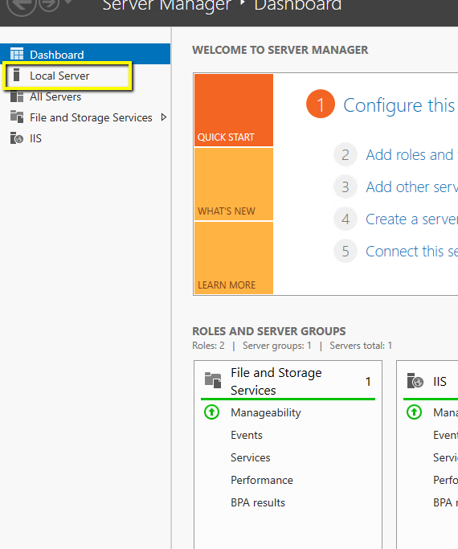
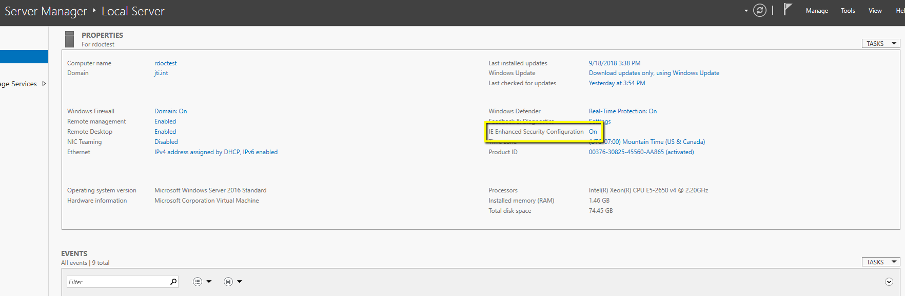
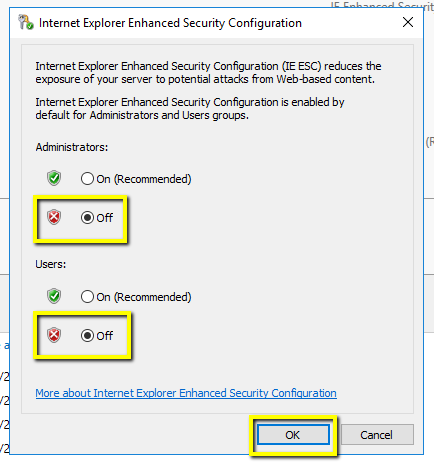

How to disable Internet Exploreres Enahnced Security Features on Server 2008+
Ryan Dockstader | Sept 20, 2018
Internet Explorer Enhanced Security is enabled on servers by default. It makes it so if a site isn't in a list of trusted sites it won't allow you to browse to that site. (including sites from Microsoft, Google, localhost, etc.). While this can be a nice feature, it can also be a touch annoying if it's not setup properly. In this guide, we'll show how to disable it. Here is the error it will throw:
Open Server Manager
Click Local Server on the Left Hand side
Under Properties, on the right hand side click the link next to IE Enahnced Security Configuration
Check the box for off for Administartor and Users (or just administrators if you want to still restrict access to users) then hit OK
